Editor
Approved application · approved logoEvery image below is an actual canonical PNG. Open an image for its full resolution. These are authored design scenes, not current-app browser captures.
Undo and redo
history-local-undoActions and implementation pointers
+ New page · Journal · Explore · All pages · ⌄ · Reflections · › · Reading · Undo · Redo · Ask Journl · Today’s Journal · Close · Instant · Thinking
packages/better-editor/src/ui/side-menu.tsxapps/web/src/components/editor/document-toolbar.tsx

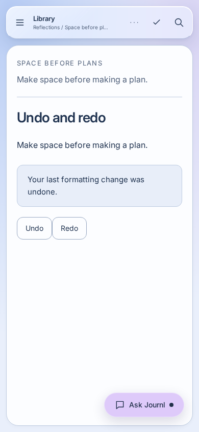
SHA256 76ea3159a8d58439cf3362addbc22b86a00b83c9522093f002f891aea6a82a7e

SHA256 f2e80153b95a71018962c5e0624a35328f7687f83e7c2fa40d4534d99111bbd2

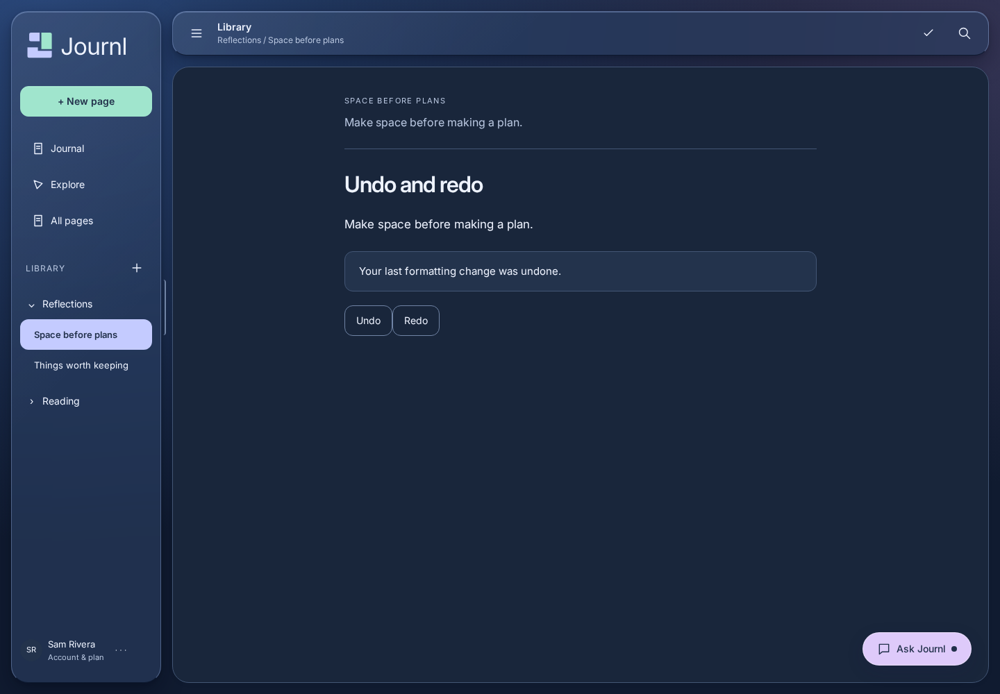
SHA256 3a2cf7c02b92325911a5dc472d1f20666eadf858f6dfc0f99e740ba2db2852c2

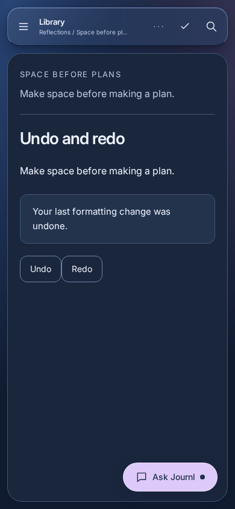
SHA256 9507ee56bc863a00cd3bb04e03086ea3d88373ef78b0aea67015674c575b7131
Move a block on touch
touch-block-handleActions and implementation pointers
+ New page · Journal · Explore · All pages · ⌄ · Reflections · › · Reading · Add block · Block actions · Move block · Ask Journl · Today’s Journal · Close · Instant · Thinking
packages/better-editor/src/ui/touch-block-drag.tsxpackages/better-editor/src/ui/side-menu.tsx

SHA256 64b988189b58a28666c6a9bb4a05bfc696c6c5424439674f6b7e769636188de5

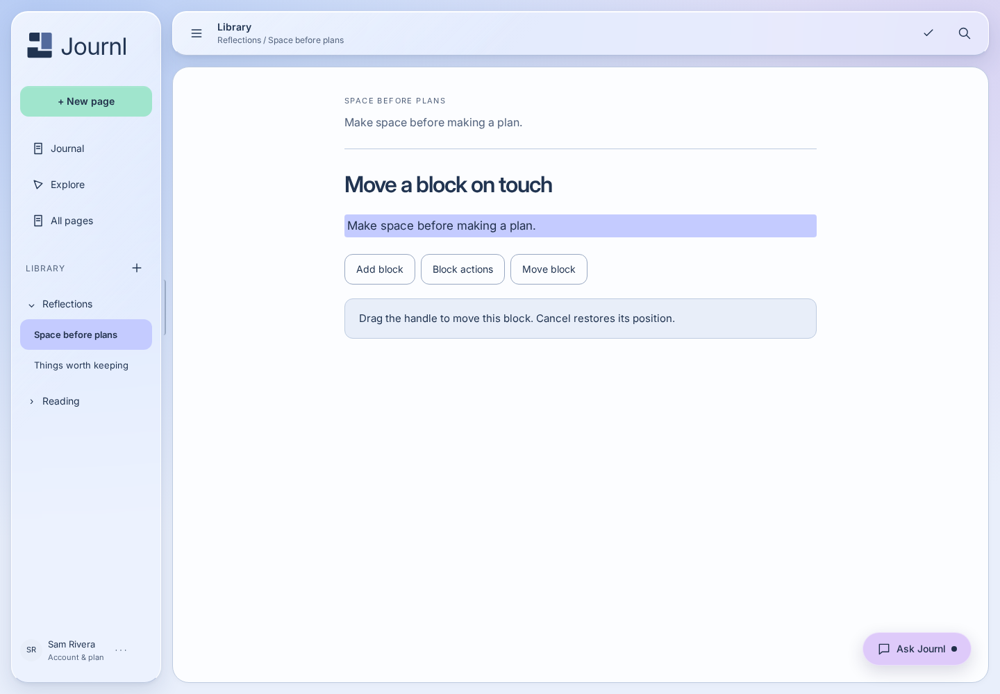
SHA256 dc89c1448665c2f75f101731a979a75a527eca0426fc809f3efa4d26c0860a49

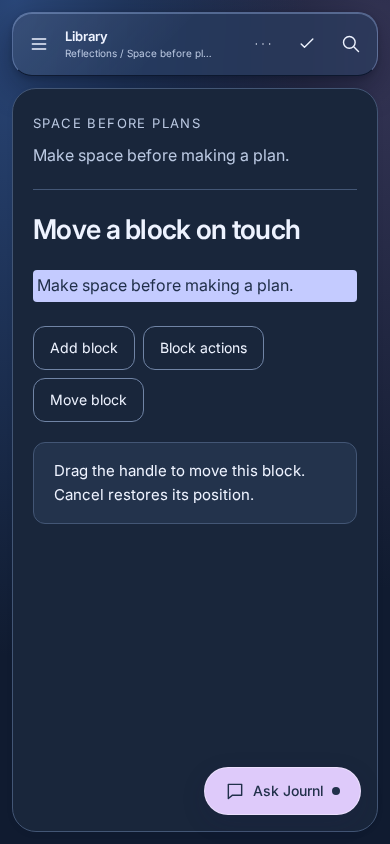
SHA256 6c518f699d472a4e3efcbe08bb07e21ed28ca3f1176ff4da37e2c4ff367afd39

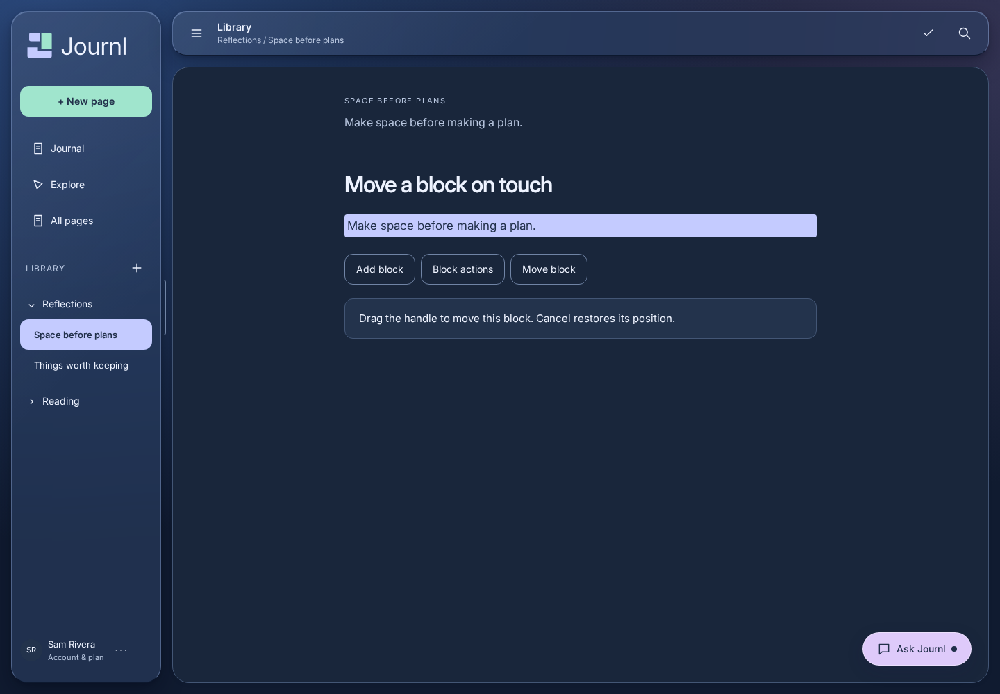
SHA256 26699317e623acefca224bb1894a1ee206c0cd74810fb28090736a32c6a116fd
Insert a reference
reference-slash-completeActions and implementation pointers
× · Reference note · Reference block · Embed note · Embed block · Space before plans · Page · A slower start · Journal
apps/web/src/components/editor/document-editor-view.tsxpackages/better-editor/src/engine/slash-items.ts

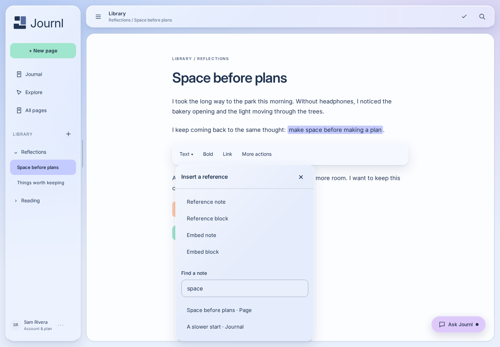
SHA256 ab3b2dcbc6d2658ad63f647c5854ae7a5052bd7330e52245d3f9e1f72fc2d170

SHA256 cc46e7dbefdbd1417597d7bddf0d5a145a6df6fc2c4fbdbffe575fec35e6e923

SHA256 36635abaffa9d5c18627670a0abada40dc1509bd2fc5091e9adf2ad07d78bd6d

SHA256 61dd32e72a6606f53341449341d1e5eca7bbdbf384c64b37730217d07b4b3e65

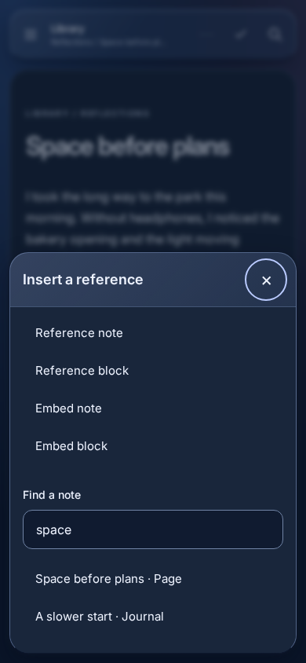
SHA256 dff1494b23c0f970675575559475d8d20813a115851856127237b520c5ed7e0a

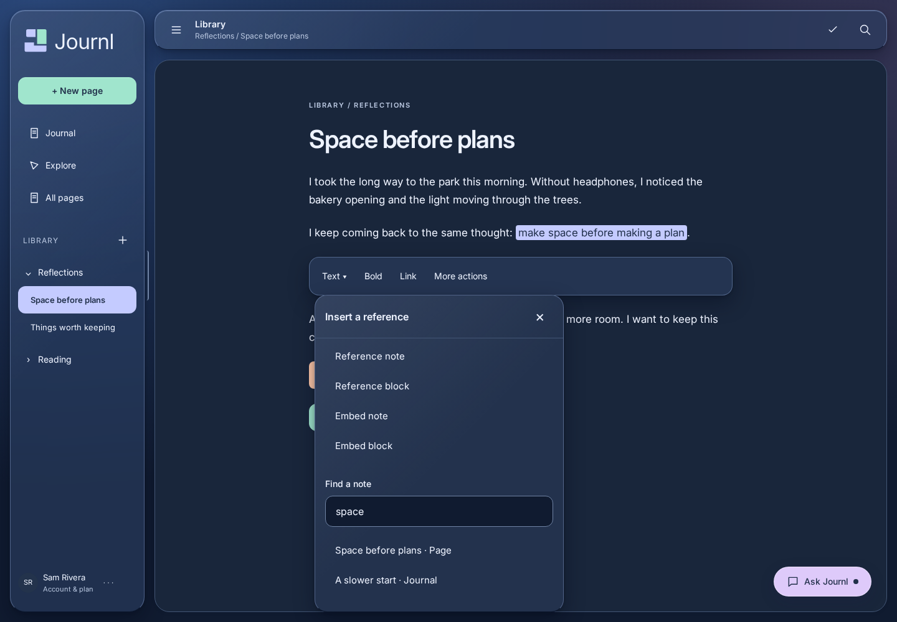
SHA256 175b6eff85a0365854316708ce2e70525b08fcaa16790ed7b92f42f8b04cd5c5
Review suggested changes
ai-review-proposalActions and implementation pointers
+ New page · Journal · Explore · All pages · ⌄ · Reflections · › · Reading · Reject changes · Apply changes · Ask Journl · Today’s Journal · Close · Instant · Thinking
docs/editor-inventory/README.mdapps/web/src/ai/tools/write/client.tsapps/web/src/ai/tools/apply-changes/client.tsapps/web/src/ai/tools/reject-changes/client.ts

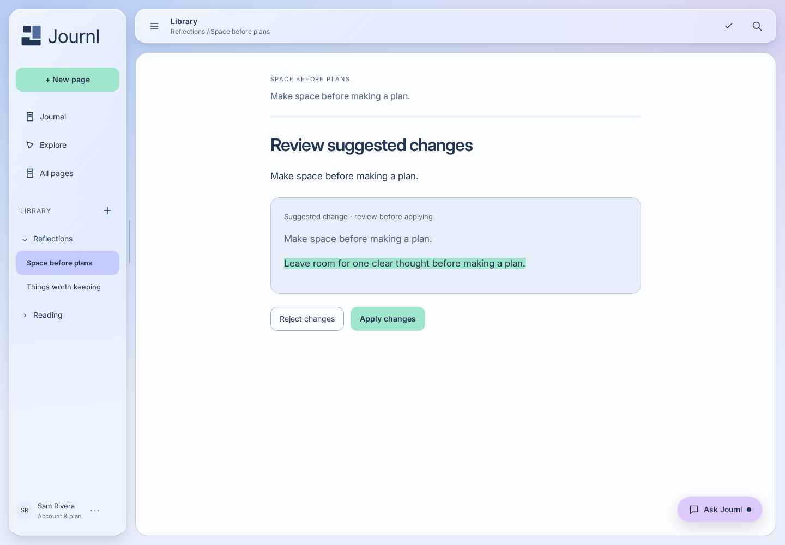
SHA256 f1c67595fe489ec8a0ce96f41eaefcd66e853a88b3ff7007f8f140dd1327535a

SHA256 55a0fdc583dc2a7a8171d39a3f23b43a428c1cf3e9934c031a979067459e4c06

SHA256 8702d61ead8649eb2c37d5ff2f67febadf124f44d6203c38d4e433a89919c620

SHA256 ca74daeb1945df78d119031c8c3da9a76d921f2f42b4e3b8b8deff1e2564d26d
Preparing a suggestion
ai-review-loadingActions and implementation pointers
+ New page · Journal · Explore · All pages · ⌄ · Reflections · › · Reading · Cancel · Ask Journl · Today’s Journal · Close · Instant · Thinking
docs/editor-inventory/README.mdapps/web/src/ai/tools/write/client.tsapps/web/src/ai/tools/apply-changes/client.tsapps/web/src/ai/tools/reject-changes/client.ts

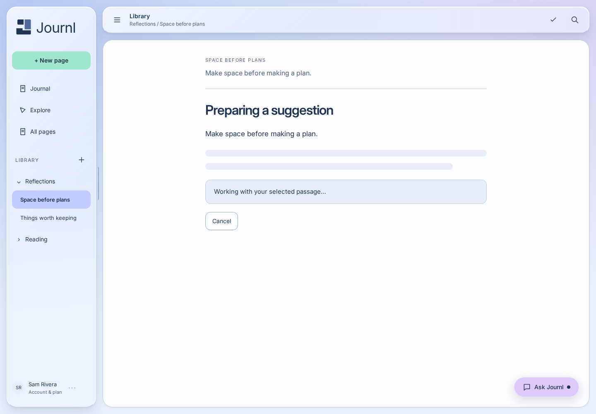
SHA256 6284afeefa0963396a90c888e4f03ecdf470f2752532c180d0d04610e70b0346

SHA256 0558b744e35a954fd579bb211d75d7367908074dd6e0050c75842df96fb6e3c1

SHA256 3f7733ad48494a86c8cbb99f7894a6ad9e22f733699e10a93c6caae9eba5956a

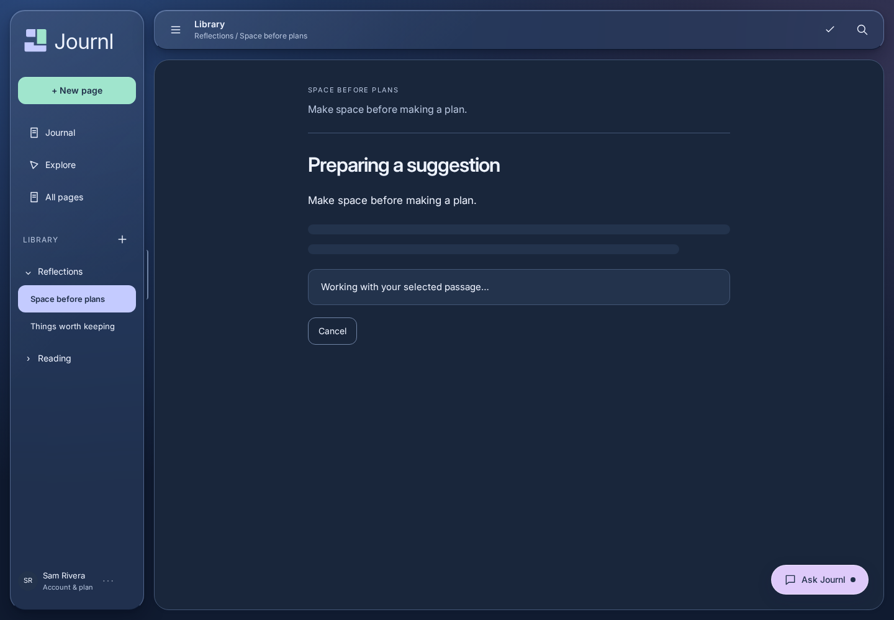
SHA256 3becc744efa4746b4420e9011367a115c5e67edc9cb13a43f1afc998a927de0e
The suggestion could not finish
ai-review-errorActions and implementation pointers
+ New page · Journal · Explore · All pages · ⌄ · Reflections · › · Reading · Cancel · Retry · Ask Journl · Today’s Journal · Close · Instant · Thinking
docs/editor-inventory/README.mdapps/web/src/ai/tools/write/client.tsapps/web/src/ai/tools/apply-changes/client.tsapps/web/src/ai/tools/reject-changes/client.ts

SHA256 7476bd6efe7527acc7c4f47ec52acd1b80fdac75985905f3f82e2dc957f982ba

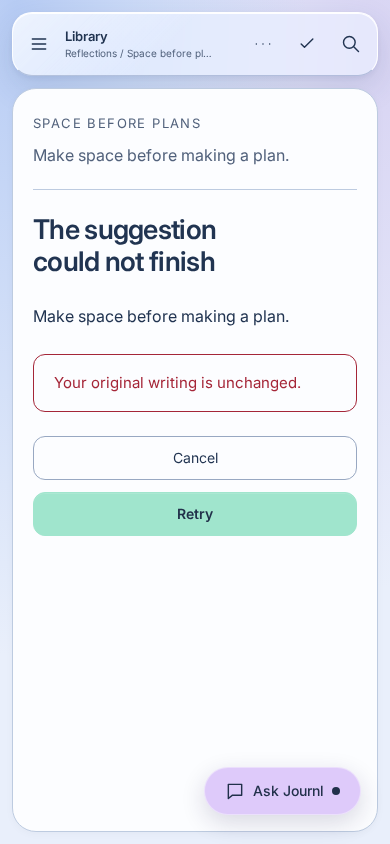
SHA256 d83d31cb79c143d6df360d163a559b365601dc1efe06e1676be9a526a730c803

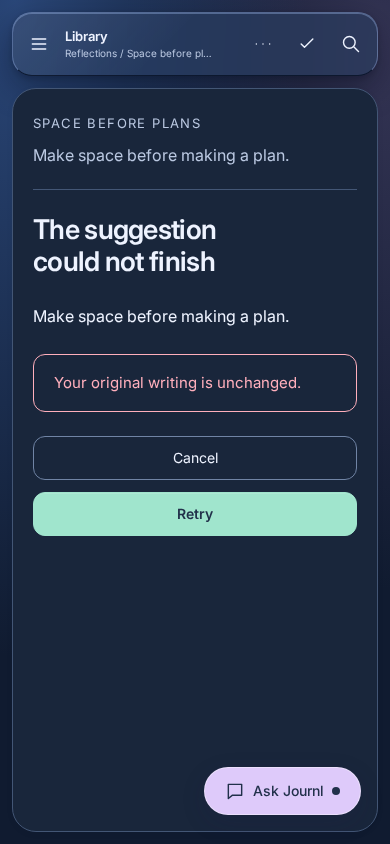
SHA256 d7e9e5d5a5c49677b4ec29cbc8323dbb08b9185e79f981b4525c892551626112

SHA256 140d76b3c15237d5d99e2a688a83950e44ca6525400631d5f4d8d17e92c360fa
Suggestion cancelled
ai-review-cancelledActions and implementation pointers
+ New page · Journal · Explore · All pages · ⌄ · Reflections · › · Reading · Continue writing · Ask Journl · Today’s Journal · Close · Instant · Thinking
docs/editor-inventory/README.mdapps/web/src/ai/tools/write/client.tsapps/web/src/ai/tools/apply-changes/client.tsapps/web/src/ai/tools/reject-changes/client.ts

SHA256 dd219f112d122a076962f2ad642fbb6344ed7edb4f0aca859a20f487e6bf5c7d

SHA256 3b73bb5bd8920f35d95fb30525856244f2d681a7d139b46a9a5283d51ff32ee5

SHA256 ff8b384dd38e380f543cc7c37bd8cbd72f0d2f808dbcb8ffc3bde308967c9e06

SHA256 866283c4869ab74c65f3a7846caefbce73ab9a403999ed35d07099b3e7097a48
Suggested change applied
ai-review-acceptedActions and implementation pointers
+ New page · Journal · Explore · All pages · ⌄ · Reflections · › · Reading · Undo · Ask Journl · Today’s Journal · Close · Instant · Thinking
docs/editor-inventory/README.mdapps/web/src/ai/tools/write/client.tsapps/web/src/ai/tools/apply-changes/client.tsapps/web/src/ai/tools/reject-changes/client.ts

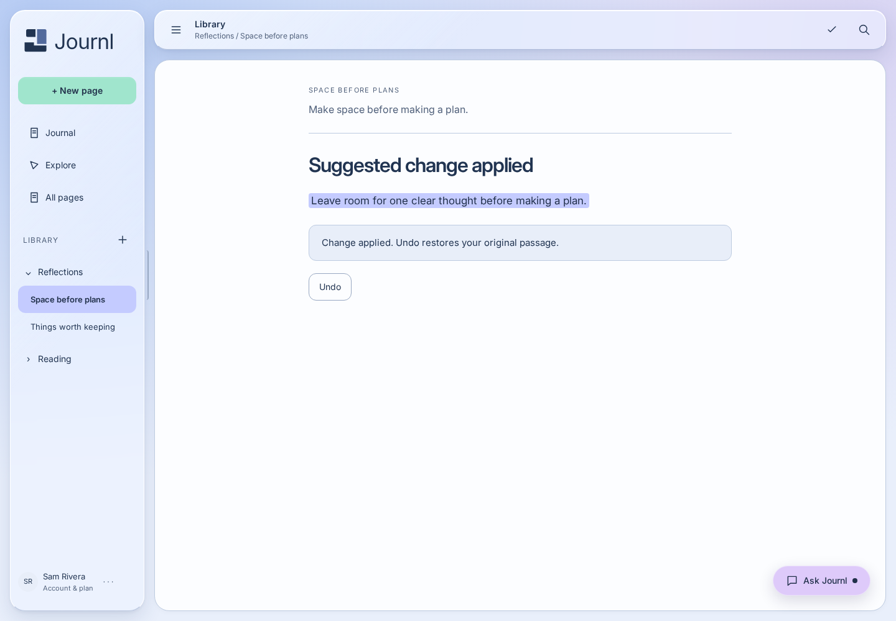
SHA256 6cb912f73f7e3e4c057586f3ea08624a8b8e4a5dec54732a023899bc9883e736

SHA256 f09c6e1a540b25517194ffceced82311a7d358e3b4fd4e21b635d5b6d1b67658

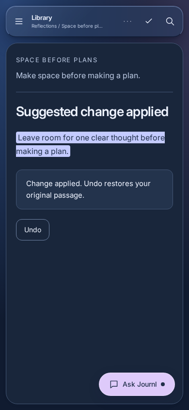
SHA256 9c74c225164f7e1f17bad23585bcf25037f2d3f55da90639a63db72cbde3616b

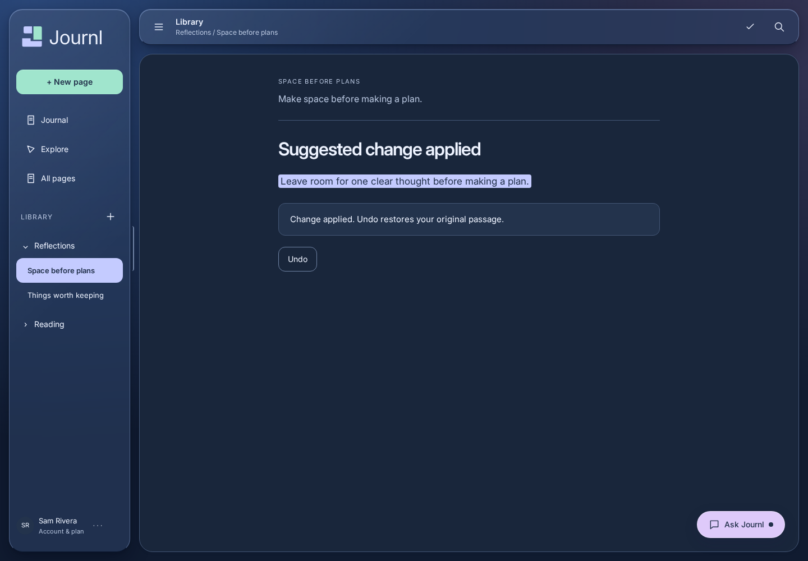
SHA256 5754c23b7e94d8388bd0f17f14ed9788591ea270cbe699c1d4e7c78a8b52f9bc
Original writing restored
ai-review-rejectedActions and implementation pointers
+ New page · Journal · Explore · All pages · ⌄ · Reflections · › · Reading · Continue writing · Ask Journl · Today’s Journal · Close · Instant · Thinking
docs/editor-inventory/README.mdapps/web/src/ai/tools/write/client.tsapps/web/src/ai/tools/apply-changes/client.tsapps/web/src/ai/tools/reject-changes/client.ts

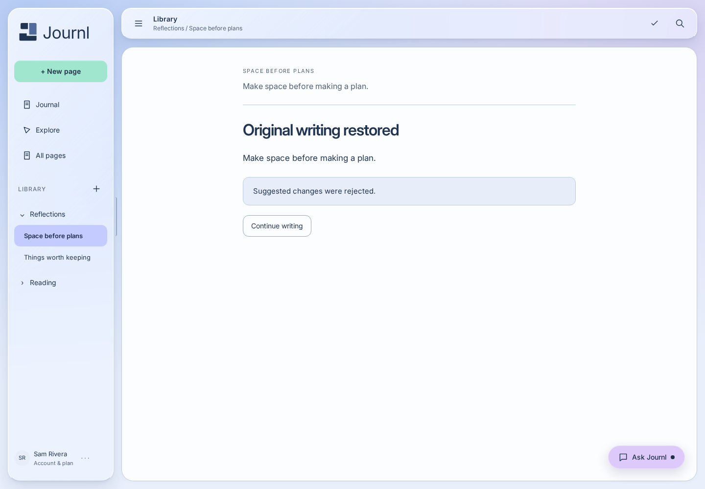
SHA256 81dd43b4aba7f6cf704f1bbcf2f5ebb8485e0573d3b33714cd5c99c4f921ba44

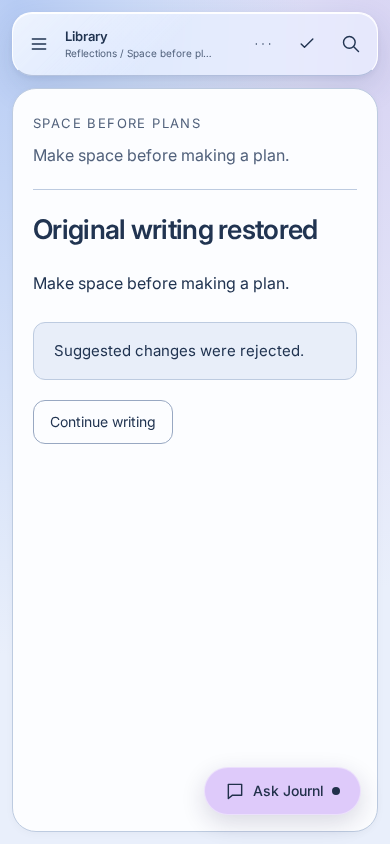
SHA256 33d1bb1428ce65c182e15370bca4ed8b77e2f3426be024fd431088e809d6a151

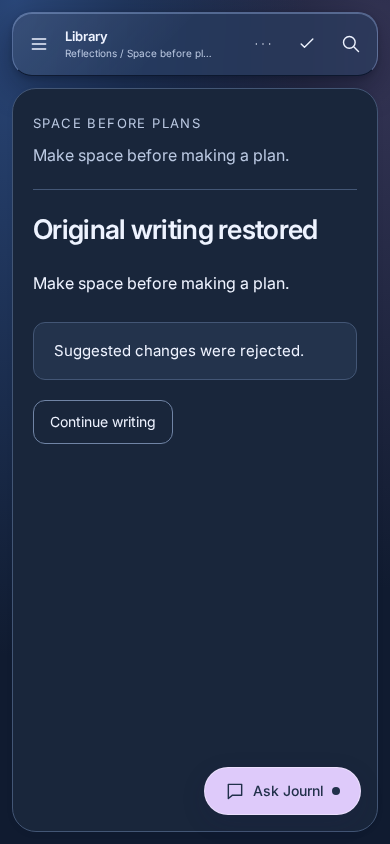
SHA256 5ae7ef1a258083c02a57f8fbd87e3ce14bf53d6cf49bd78c1e32a49eef967de1

SHA256 4afc39a4e0c714dd8e08c186ceea0c24281bbeee15788d58a90e24ea0783563a
Your writing changed
ai-review-staleActions and implementation pointers
+ New page · Journal · Explore · All pages · ⌄ · Reflections · › · Reading · Dismiss · Review latest writing · Ask Journl · Today’s Journal · Close · Instant · Thinking
docs/editor-inventory/README.mdapps/web/src/ai/tools/write/client.tsapps/web/src/ai/tools/apply-changes/client.tsapps/web/src/ai/tools/reject-changes/client.ts

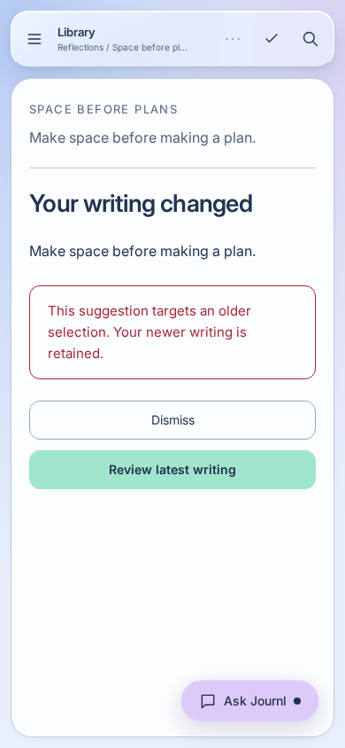
SHA256 07a35c522d003c709488a2c742716ad03eeb25bf5c50e90bcbf40438daedbc62

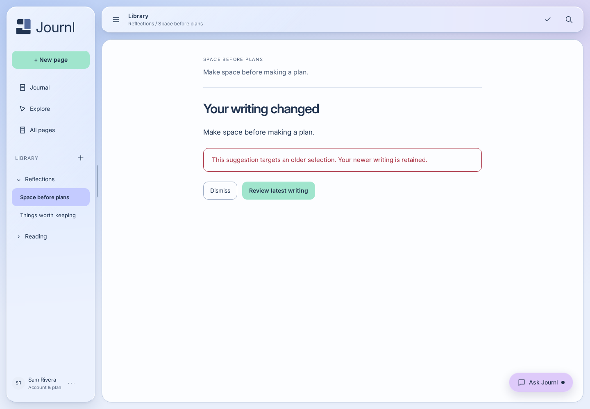
SHA256 7f8b205598bc31adcb4ef520fe5835066c15dade0e9a7b4ccf5729027e5ea066

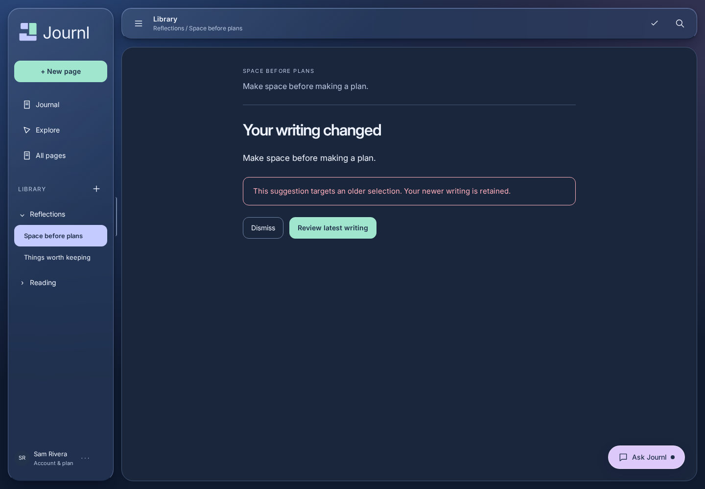
SHA256 c87a32247fdccebee2b07d5116fd8c795d04da4be13f733d4ad0de174f8e7924

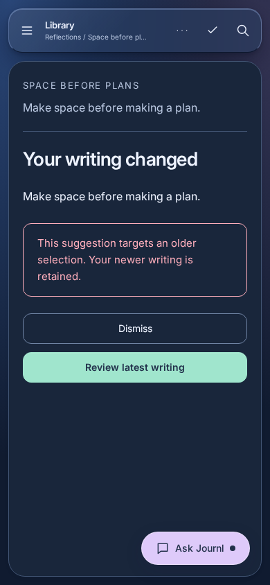
SHA256 cf32532205afdf2286dbaedb1167862024dc0b56e1dc898790ae9836037dc65c